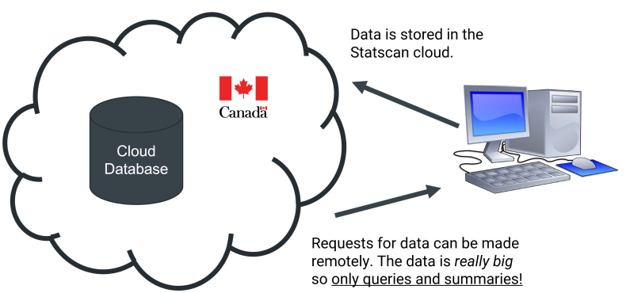
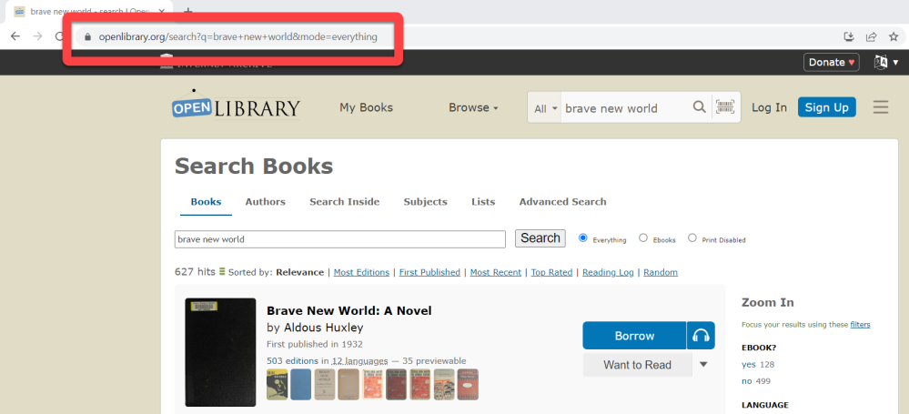
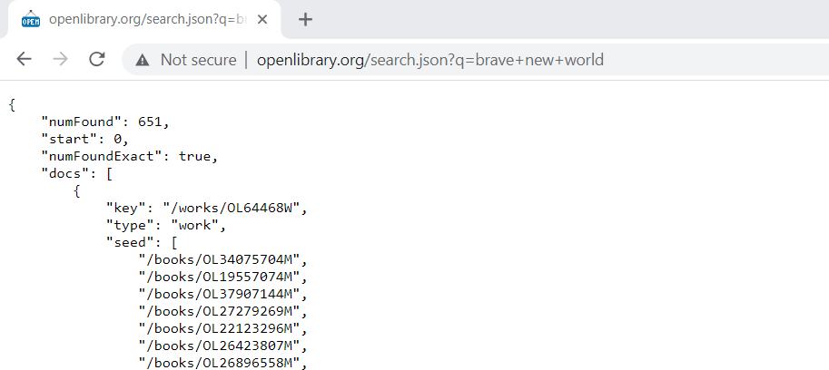
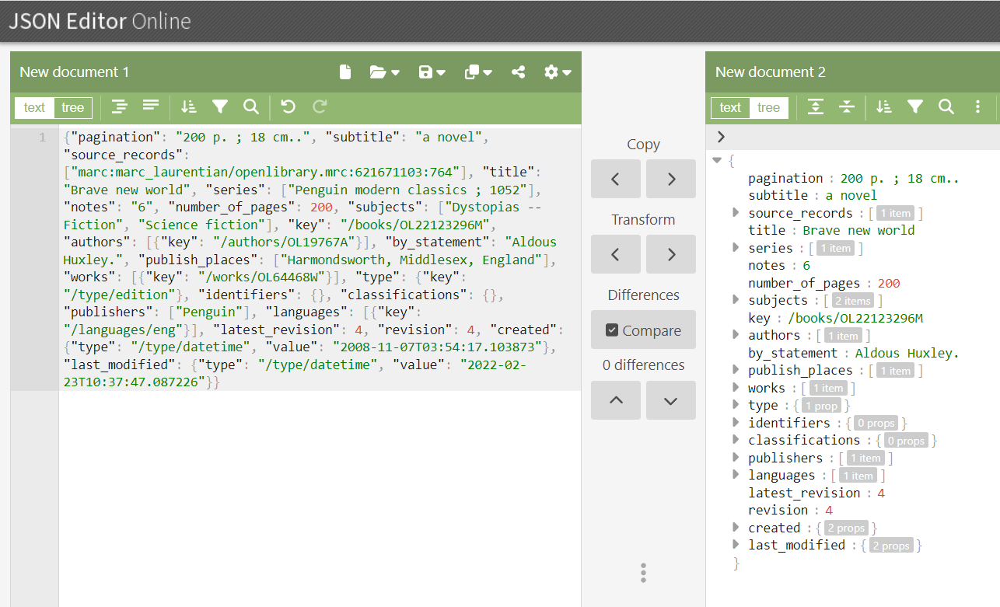
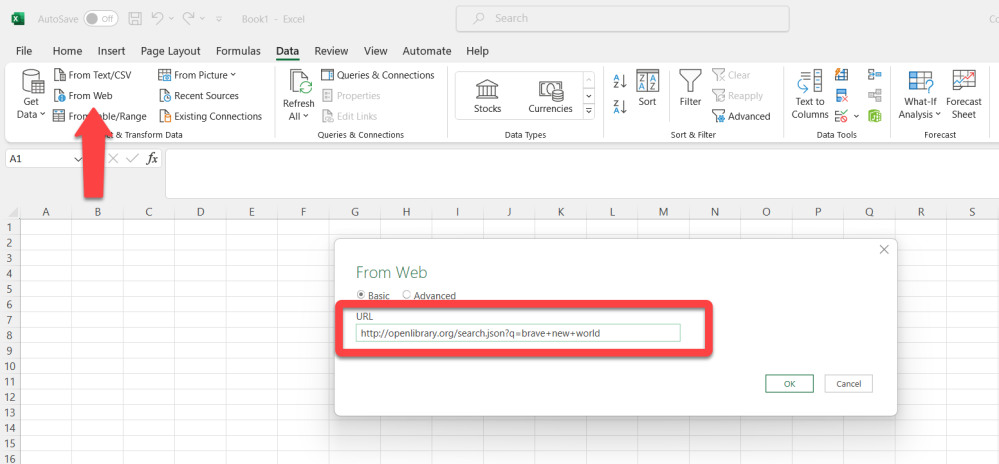
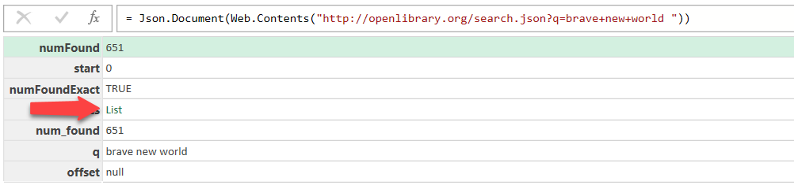
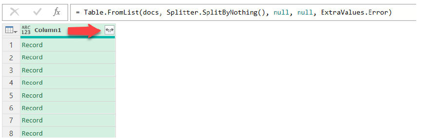

4 Finding and retrieving data
4.1 Data sources
If you are working for a company your client or employer will most likely have an internal database storing information related to its activities (e.g., clients, products, inventories, sales, employees, financial performance, etc.) which you may be using for your data science project.
4.1.1 Open government data
Governments and public organizations are also increasingly making the data they collect openly accessible for the benefit of the public. Here are some sources:
- Canada (https://open.canada.ca/en/open-data)
- Nova Scotia (https://data.novascotia.ca/)
- United States (https://www.data.gov/)
- World Bank (https://data.worldbank.org)
- Toronto Public Library (https://opendata.tpl.ca/)
4.1.2 Research data
The Open Science movement also emphasizes the importance for researchers to share the data that they used for their published work, which can be found in repositories such as:
- DataCite (https://datacite.org/). This is an aggregator that allows you to search hundreds of research data repositories.
- Zenodo (https://zenodo.org/).
- Figshare (https://figshare.com/).
4.1.3 Bibliographic records
Bibliographic records and other metadata related to different types of works can be used for data science projects. However, because of their enriched metadata and their inclusion of bibliometric indicators like citations, citation indices provide more opportunities. Examples of citation indices are:
- Scopus (available through the Dal libraries)
- Dimensions.
- OpenAlex. The search engine does not allow you to easily download data, but there is a free API that can be used quite easily in R with the openalexR package (we will learn how to use R and R packages in Chapter 2 and how to use an API in Chapter 3).
- Google Scholar. The easiest way to download data from Google Scholar is to use the Publish or Perish software.
4.1.4 Miscellaneous datasets
There is an overwhelming amount of data available on the Web, so here is a non-exhaustive list of data sources that you might find useful.
- Kaggle (https://www.kaggle.com)
- Awesome public datasets (https://github.com/awesomedata/awesome-public-datasets)
- Internet Movie Database (IMDb) (https://www.imdb.com/interfaces/)
4.2 Open data
The following this section was taking integrally from the Snappy Data Management textbook by Colin Conrad (Chapter 4, Hands-on Exercise: Critically Assess Cloud Open Data, pp. 31-34).
Two prominent trends in the public and academic sectors have been open government and open science. These trends rely on cloud infrastructure. Open government seeks to use digital and data resources to make government more accessible to everyone [40]. Open science similarly seeks to make the process of science more transparent and trustworthy [41]. These movements have fostered a vast number of new digital services and freely available data repositories. While it is useful to know about these resources, we can also critically assess them using the frameworks for cloud infrastructure discussed. In this exercise, we will explore several open data resources and explore ways of effectively using them.
4.2.1 Library data guides
Our first stop is Dalhousie University’s Data and Statistics Guide. Julie Marcoux, Dalhousie’s data librarian, maintains this handy guide, which you can find at: https://dal.ca.libguides.com/data. The Data Guide provides links to many data repositories. Consider visiting some of these tabs. One resource that may be of particular interest is the Statistics Canada tab, which gives links to many of Statistics Canada’s free resources. We will explore these later in some detail, though consider ways that you might use these to make some sort of impact, whether for your benefit, or the world’s.
One idea may be to use Statistics Canada to inform where you would launch a coffee shop. You might consider:
- Demographic trends for each region (e.g., with the Census dataset)
- Growth in industries that are present in the desired city (e.g., with the Statistics Canada datasets)
- Identify whether there is growth in imports of international coffee goods from some regions versus others (e.g., the Canadian International Merchandise Trade Database)
In addition, other public repositories are provided in this guide, most notably the government of Nova Scotia’s open data repository. Librarians at other universities and public librarians may make similar guides to help inform available data resources.
Consider the ways that a tool like a data guide might help improve data findability. The perceived ease of use of technology is a very well-studied predictor of technology acceptance and is part of one of the most widely discussed theories of technology behaviour [42]. Does this guide make it easier to find information using open data repositories?
4.2.2 United States open data repository
A second interesting open data repository is the Government of the United States open data portal: https://data.gov.
Though the Canadian federal government also maintains its own data portal, the US open data portal is on its level. As of July 2023, it indexed 254 716 datasets from all levels of government: federal, state, and municipal. You will almost certainly find something interesting using this data portal. Consider searching for “farmers markets” or searching using the following query in your browser: https://catalog.data.gov/dataset?q=farmers+markets.
As you scroll down, you will quickly notice that some of these 69 datasets also provide JSON APIs. You could use these APIs to directly query the datasets, as well as create web applications that use or visualize the data.
Figure 4.3 - A search for “farmers markets” found 69 datasets in 2023
4.2.3 Google’s data search tool
A third approach to discovering data is to use a search engine. You might have some luck plugging in queries such as “duck datasets” in regular Google, though you will probably spend a lot of time searching through irrelevant links. Instead, Google created a search index specifically for datasets. You can visit it at: https://datasetsearch.research.google.com.
Unlike the curated guide and public data portal, Google is a search engine that will search through various repositories and resources from around the web. Try using this tool to search for interesting data, perhaps not about ducks this time. If you would like an example, try searching for something even more obscure and “un-datalike” such as “William Shakespeare”. You will find repositories containing data on his works and even the location of ongoing Shakespeare plays.
You can also use this tool to conduct targeted searches of specific government databases. For example, if you wished to find datasets related to “covid” on the Government of Nova Scotia’s site, you could query along the lines of: “covid:https://data.novascotia.ca/”.
This yielded me a very interesting dataset called “Applicants and Recipients of Small Business Impact Grant and Small Business Reopening and Support Grant,” which is very interesting from the perspective of the accountability of public funds [43]. Google’s database search is a very powerful tool for finding open datasets. Consider the ways that you might use these to advance public knowledge, or perhaps to investigate which businesses received funding.
4.2.4 Canada’s patent database
Finally, it is important to note that though the open data movement is new, governments have been using databases to supply critical public information long before the trend. One great example has been the Canadian Intellectual Property Office, which has long provided a publicly accessible patent search database. You can find the database at: https://www.ic.gc.ca/opic-cipo/cpd/eng/introduction.html.
This tool is designed to help entrepreneurs, inventors, businesspeople, and lawyers find patents that are relevant to their context. It is very important to be confident that an invention does not violate an existing patent.
One of the most useful features of this tool is the Boolean Search option. This uses Boolean logic operators (e.g. “and”, “or”) to help a user find patents based on specific keywords. Consider searching for patents based on “brain” AND “adaptive meditation”.
Figure 4.4 - Keywords to include in the sample search
You will probably find a few patents filed and owned by Interaxon Inc. (Canada), which makes the popular Muse headband, available in many electronics stores [44]. Any researcher hoping to commercialize a meditation device would have to contend with these patents. Consider doing your query of possible innovations that are interesting to you. How does this type of database add value to Canada’s public service?
The following this section was taking integrally from the Snappy Data Management textbook by Colin Conrad (Chapter 3, Storage: Is Data the New Oil?, pp. 21-27).
4.3 Data Exchange Approaches
While it is possible to have databases that are not connected to the Internet, most databases today use the Internet to be functional. This is especially true of the databases involved in cloud software, which are run by clusters of computers stored in remote warehouses. Most of these connections use some sort of clint-server request, where a query is sent from a local computer to the cloud database. Figure 3.1 illustrates a hypothetical request to Statistics Canada’s publicly available online data repository [28]. When you search a website through your browser (e.g., by downloading a CSV format census file as you will do in Chapter 5, or by requesting library data in this chapter), your computer will request the server. After making this request, data may be transmitted from the server in the requested format.

Figure 3.1 - An illustration of a request to Statistics Canada’s server
Web applications work similarly to you and your browser, though they will usually instead make an electronic data interchange request. These days, online data is often exchanged using a representational state transfer application programming interface (REST API). When web applications request data using this process, they will often exchange data in an efficient and readable format, such as JSON. Most NoSQL databases make it easier to store and retrieve JSON formatted data, making it easier to process large amounts of requests. Data exchanged using cloud web applications can use JSON and REST APIs to build apps that leverage big data.
4.3.1 Hands-on Exercise: Hack an Online Library
We will learn about the elements of this critical infrastructure in a hands-on way, using the API provided by Internet Archive’s Open Library [29]. The vision of the Open Library is to make all of humanity’s published works freely available to everyone in the world. It does this by providing a digital collection of books in a variety of formats, ranging from text to Kindle. Though this is a freely available API, the underlying mechanisms of their application are similar to an e-commerce store—you can query their database, check items out, and provide feedback on the materials.
The Open Library’s API [30] gives detailed documentation about how to access and use data retained on their system. We will use this to navigate their collection and retain their library system data by tricking our web browsers to behave like a web service. Though we will not retrieve book content (as it may be copyrighted), their system data is freely available for people to use. We will use this to explore how the technology works and how we might use an app like Excel to leverage this technology.
4.3.1.1 Step 1. Search for books using the open library web page
If you visit the Open Library (https://openlibrary.org/) you will have the ability to search for books using the search bar near the top of the screen. Try searching for the book Brave New World (by Aldous Huxley, 1932) using this tool. Do not select one of the options presented, instead, after typing “Brave New World,” press “Enter”. You will be presented with the results of your search.
The Open Library web application will present you with a series of matches to the search request “Brave New World,” just like nearly every search application that you have ever used. This is likely not exciting to you.
What is worth pointing out is how this application retrieves this data. At the top of the screen, you may have noticed that your web URL has changed, and now instead of just including “openlibrary.org”, it includes a long phrase “/search?q=Brave+New_World …”. This is an example of a GET request, which is one of the methods used by all web technologies, browsers, and apps alike. In this case, you ordered your computer to send a GET request to the Open Library servers, and it served you these results. This is the practical foundation of the web and is the first concept required to understand how data is exchanged.

Figure 3.2 - Results of a search for “Brave New World”
4.3.1.2 Step 2. Search for books using the open library REST API
Let’s now do something more interesting. Instead of making a GET request using our web browser, let’s instead make the same GET request using their REST API. This can be done by modifying our original request. Type the following request into your web browser: http://openlibrary.org/search.json?q=brave+new+world.
The information to the right of the ‘?’ (question mark) in your GET request is the API input. The API will then provide you with some output. You will receive a line of text like this, similar to that depicted in Figure 3.3.
The text that you are observing is the JSON output of your search. If you can’t make heads or tails of this, you are not alone. JSON data is not designed to be read by a human, but rather be interpreted by web services.
Nonetheless, we can make some sense of this with some squinting and scrolling. You will notice that the value for “num_found” was something like 651, which means that there were 651 matches to this search. This explains why so many documents were returned! If you scroll down your JSON results, you will eventually find data that corresponds to individual record entries. It probably makes sense to retrieve information for individual books instead.

Figure 3.3 - Results of an API search for “Brave New World”
Let’s instead search for something simpler. While we originally used a “search” API, the Open Library also offers a “books” API. Try pasting the following request into your browser instead: https://openlibrary.org/books/OL22123296M.json.
This will return the data associated with the book with the ID OL22123296M, which is the ID for the original Brave New World. In other words, you have successfully used the Open Library REST API to retrieve the JSON data associated with the book.
4.3.1.3 Step 3. Use an editor to make better sense of the results
Though this request is easier to process, it could still be a lot easier for humans to understand. Fortunately, JSON editors can help our brains process this data. JSON Editor Online (https://jsoneditoronline.org/) is a JSON editor that operates entirely in your web browser.
Try using this tool to make sense of the JSON data. Copy your JSON book request into the left element of the editor and click “Transform”. It should process your data into a tree format provided in the right element. This is depicted in Figure 3.
Try clicking around the tree on the right. You can find a lot of useful information about the book. This information was contained in the API results, though was not usable to us. Similarly, a web application could make requests to the API and visualize the results using computer logic.

Figure 3.4 - Processed JSON data
4.3.1.4 Step 4. Retrieve JSON data in Excel
In addition to web applications, data processing software applications such as Excel are often configured with tools to access JSON data served through web APIs. We will revisit the request originally made at the beginning of section 3.4.2, though this time retrieves that data through Excel, where it could be more useful.
Start by opening Excel. Once open navigate to the “Data” tab at the top and click “From Web”. In the resulting prompt, add the original search query, as illustrated in Figure 3.5. The search query is: http://openlibrary.org/search.json?q=brave+new+world.
Once the query has been conducted, Excel will show you the first level of the query without the nested values. In our case, we are interested in the “docs” objects, as this contains the details of each of the first 100 library items in our query. Click on the docs List to open the records, as depicted in Figure 3.6.
After this, using the Transform tab click “To Table” and use the default settings. This will convert the JSON output into an Excel table. Finally, click the column expand button as depicted in Figure 3.7. Accept all the columns by pressing “Close & Load” to populate your spreadsheet. Close the power query editor once complete and when prompted select “keep” to keep the results of the query. This will create a table out of the JSON data in Excel.

Figure 3.5 - Request the results of the “brave new world” search through Excel

Figure 3.6 - Click “List” to retrieve the docs records

Figure 3.7 - Click the column expand button to populate the table columns
This demonstrates how you could retrieve web data in Excel. Using this same approach, you could connect to other resources, such as an Azure database or a Shopify CRM web resource. Many enterprise tools will also provide step-by-step instructions to demonstrate how to make a connection.
4.3.1.5 Step 5. Observe a different example
Finally, let’s now apply some of these skills to different APIs. Similarly, use your web browser to request data using the iTunes API. Once again, the information after the question mark (?) is the input to the API, and what is returned is the output: https://itunes.apple.com/search?term=dalhousie&country=ca&entity=software&limit=200.
The search term=Dalhousie and the country=ca indicate that you want to search for apps that contain the word “Dalhousie” assuming you are from Canada. You have also specified that you are searching for software (not music or videos), and you want at most 200 results.
The resulting data is much more complex JSON – paste it into the JSON Editor to navigate the object: it’s an object that, as of 2023, contains 6 results, with each result being an object describing an app. Similarly, you can access virtually any API to retrieve data—truly the only limit is your imagination (and the internet, I guess).